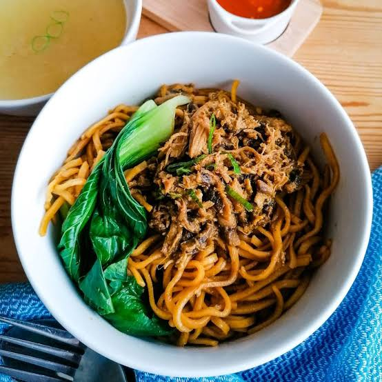

Mie Ayam Pangsit is a delicious Indonesian homemade noodle recipe with chicken and fried dumplings. This week, we bring you a fabulous Indonesian recipe for noodles with chicken and fried dumplings. Mie Ayam Pangsit contains a garlic sauce that adds an exquisite flavor to the noodles. I'm sure you'll love it!